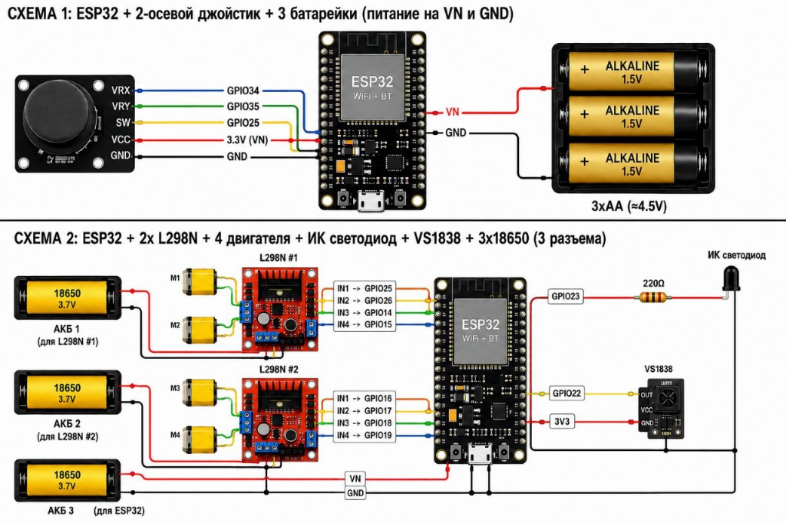
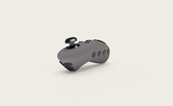

О проекте
Описание проекта
Проект «Робокрафт» представляет собой комплексную разработку управляемой гусеничной платформы на базе микроконтроллера ESP32. Процесс создания включает в себя несколько ключевых этапов:
- Разработка 3D-модели корпуса и ходовой части.
- 3D-печать компонентов (колеса, элементы корпуса).
- Разработка принципиальной схемы управления с использованием драйверов двигателей L298N.
- Пайка и сборка электронных компонентов.
- Программирование микроконтроллера для обработки сигналов с джойстика и управления двигателями.
Аппаратная часть
В проекте используются следующие основные компоненты:
- ESP32 (WiFi + BT) — основной вычислительный модуль, обеспечивающий обработку сигналов.
- Драйверы двигателей L298N — 2 шт. для управления 4 коллекторными двигателями.
- Джойстик (2-осевой) — для дистанционного управления платформой.
- ИК светодиод и приемник (VS1838) — для реализации оптической связи/управления (опционально).
- Система питания — аккумуляторы 18650 (3.7V) для двигателей и батарейки AA для питания управляющей логики.
Схема подключения

Внешний вид пульта управления

Этапы реализации
Работа над проектом разделена на последовательные спринты, включающие проектирование, прототипирование, программирование и финальную сборку. В процессе работы применяются современные методы инженерного проектирования и разработки программного обеспечения.